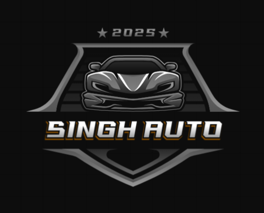

Singh Auto
A full-stack automotive service app with sign-up and login, service booking and an admin dashboard. Includes REST endpoints, a price-estimate API, file uploads, server-sent events for live updates, and 404/500 error logging for faster troubleshooting.